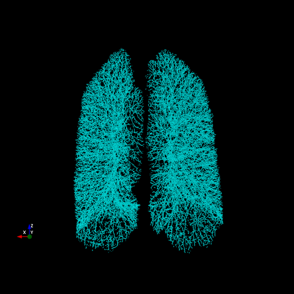
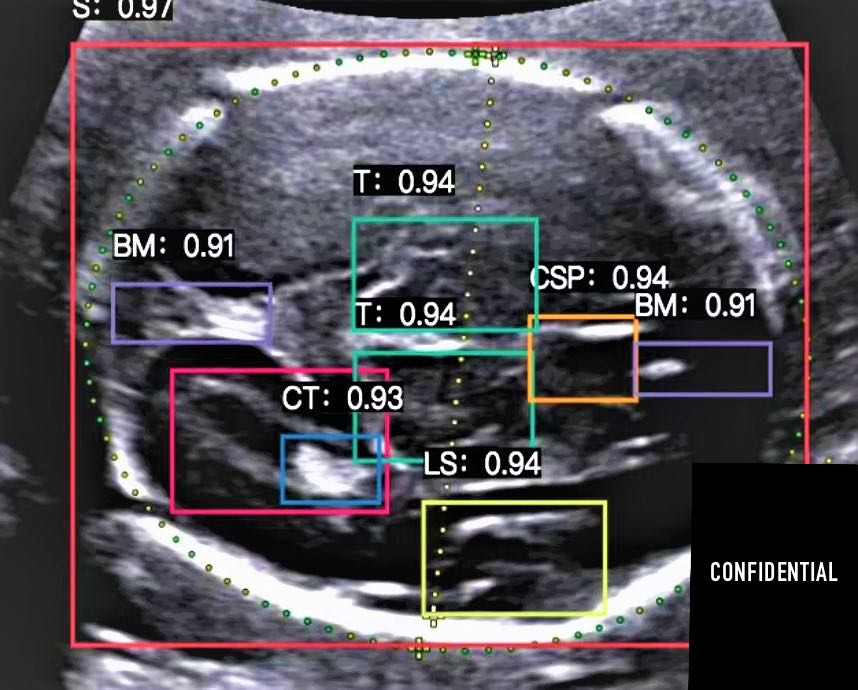
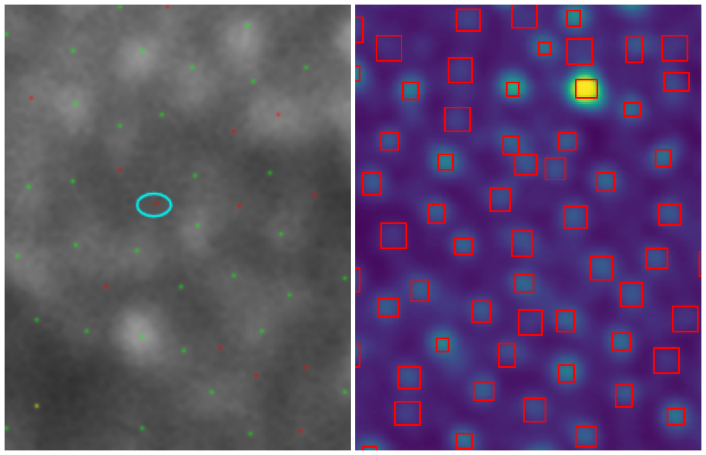
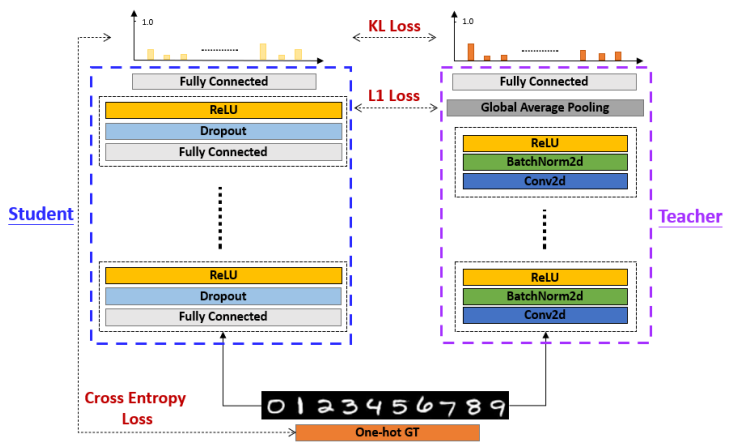
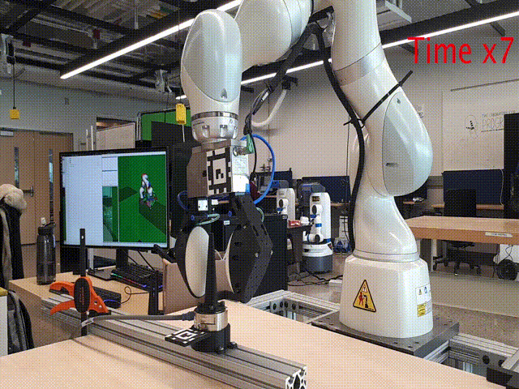
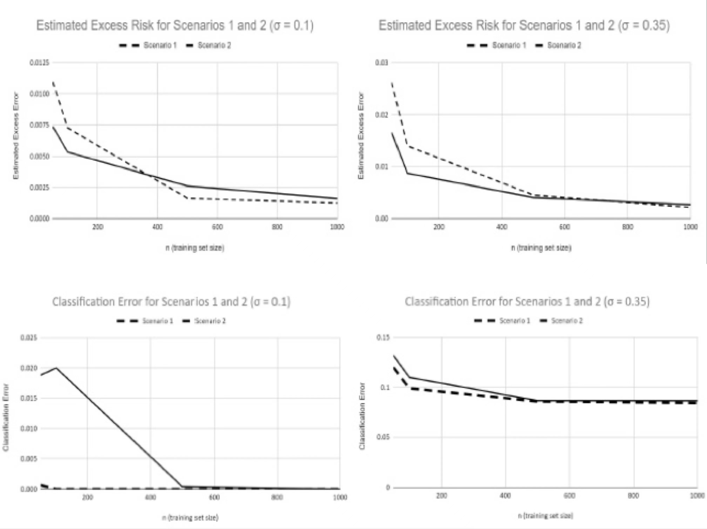
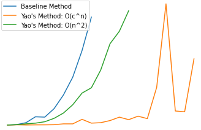

-
王子霖
-
Email: zilinwan{at}umich.edu
- [CV]
- [GitHub]
- [LinkedIn]
- [Twitter]
I am a Master's student in CSE at the University of Michigan, Ann Arbor. I am broadly interested in deep learning and computer vision, particularly their applications in medical image analysis. I am excited to find out how state-of-the-art algorithms can aid doctors diagonse fatal diseases in the early stages. In the meantime, I am also interested in designing efficient deep learning models (in terms of memory and computation) and training deep learning models under semi-supervised settings.
I am currently also a summer intern at Genentech/Roche and a research assistant at C. Galban Lab, Michigan Medicine, where I work on analyzing retinal OCTA images and pulmonary 3D CT scans using deep learning.
I previously graduated Summa Cum Laude from the Ohio State University majoring in CSE (AI track). During the time, I was fortunate to build my solid foundation in math and machine learning that helped me a lot in later study.
What's New
- April 2022: Will be joining Genentech's PHC(Personalized Healthcare) imaging group as an intern for the upcoming summer.
- Nov 2021: Started working with C. Galban lab, mainly focusing on 3D medical image segmentation.
- Aug 2021: Started pursuing my Master's degree in CSE at University of Michigan, Ann Arbor.
- May 2021: Graduated from the Ohio State University, Columbus.
- Mar 2021: CITI program certification: Responsible Conduct of Research(Biomedical)[RCR], Human Subjects Protection(Biomedical)[HSP].
Teaching
- SI670 - Applied Machine Learning: Instructional Aide, University of Michigan, Fall 2021
- CSE3521/5521 - Introduction to Artificial Intelligence: Grader, the Ohio State University, Spring 2020
Research
-

Pulmonary Artery-Vein Segmentation in 3D Computed Tomography Images
Given 3D Computed Tomography images of lungs, we extract vessels and distinguish between two types of vessels(arteries and veins) that are visually similar to each other. We propose a novel neural network that can efficiently process CT scans of resolution ~500^3 and is able to be trained with partially labeled data.
[More to come] -

Inspecting Ultrasound Image of Unborn Fetus by Deep Learning Integrated System
Given ultrasound images of 41 different parts of unborn fetus, we design and train a fine-grained classifier and object detectors (yolov5). We proposed a post-processing step that enables spatial reasoning to accurately assess the imaging quality. The system was deployed in hospitals in Shenzhen.
[website(credentials required)] -

Adaptive Optics-Scanning Laser Ophthalmoscopy Image Analysis Using Deep Learning
Given retinal AO-SLO images, we present AI based solutions to detect cones/rods from them. For optimal performance, we experiment with different variants of semantic segmentation techniques, and also adopted object detection techniques.
[report] [slides]
Medical Image Analysis
-

Transferring Inductive Bias through Leveled Knowledge Distillation (EECS545, Winter2022)
In this projecct, we demonstrate that CNN's translational equivariance inductive bias can be partially picked up by a simple MLP through knowledge distillation. Moreover, we propose two new methods to further improve the transfer of inductive bias.
[code] [report] [poster] -

External Wrench Recovery Using Visual-Tactile Sensors for Robotics Manipulation (EECS542, Fall2021)
We present an algorithm to estimate the external forces applied to a robotic manipulator equipped with visual-tactile sensors. Our model combines correspondence matching, classical rendering techniques, and deep learning. Data is collected from the interaction of the robot with ground truth force data measured from an external sensor.
[code] [report] [slides] -

Verifying the Learnability of Bounded-Convex-Lipschitz Problem (CSE5523, Autumn2020)
Given two scenarios of different domain and feature space, we implement stochastic gradient descent algorithm for logistic regression. We analyze the M-bound and ρ-Lipschitz of each scenarios, and proved the estimate of expected excess risk is up bounded.
[code] [report]
Computer Vision / Machine Learning
Side Projects
-
Pytorch-minModels
This is a constantly updated codebase of minimum pytorch implementation for deep learning models. The purpose of this project is to demonstrate the essence of deep learning models by as few code as possible. Please feel free to drop me an email if you'd like me to implement a specific model :)
[code] -

Simplified Re-implementation of NeRF (EECS598: DL4CV, Winter2022)
We re-implement the NeRF model from Mildenhall et al. ECCV 2020. To reduce computation, we used lower resolution images, a shallower MLP, shorter training schedules, and without hiearchical sampling. With these simplifications, our model can be trained within 7 minutes.
-

Multiplying a sequence of matrices (EECS586, Winter2022)
Implementation of 2 dynamic programming algorithms for determining the optimal order of multiplying a sequence of matrices introduced by F. Frances Yao's, 1982. They have O(c^n) and O(n^2) time complexity respectively.
[notebook] [slides] -

Mask Classifier (EECS5526, Spring2021)
We develop a real-time application that tells whether people in the video are wearing masks correctly. The core neural network that we designed is lighter than the popular pretrained MobileNetv2, while achieving similar accuracy and more robust real-time performance.
[code] [slides] [video]
Miscellaneous
- Languages: Mandarin (native), English (TOEFL MyBest scores 109)
- Hobbies: basketball, badminton, ping-pong, pool, fishing, skateboarding, cooking ...